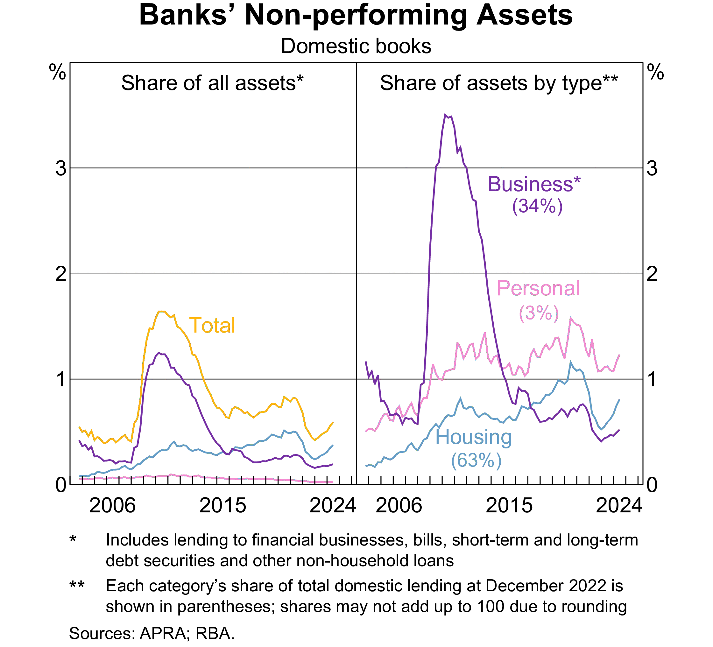

AFIN8003 Week 1 - Introduction
Banking and Financial Intermediation
Department of Applied Finance
2025-02-27
Course admin
Unit Convenor
- Dr. Mingze Gao.
- Lecturer in Finance, MQBS.
- PhD in Finance (USyd), Grad.Cert. in Computing (UNSW), BCom (Hon) in Finance (USyd), BCom in Econometrics and Finance (USyd).
- Postdoctoral Research Fellow (USyd), 2021-2023.
- Research in banking and corporate finance.
Contact:
- Room 554, 4ER.
- Email: mingze.gao@mq.edu.au
- Website: https://mingze-gao.com

About this course
Course description:
- This unit applies finance theory to the context of operational decision-making and risk management in banking and financial intermediation.
- The major decision areas for banking management are covered within a regulatory and corporate responsibility framework.
- Major risks of banks and financial intermediation are being examined.
Key approaches:
- Research-informed teaching.
- Australian focus with global evidence.
- Priority on bank risk management.
Course materials
The course materials are prepared based on several sources. Additional references are provided at the end of each week’s slides.
Weekly topics
- Introduction to banking and financial intermediation
- Risks and regulation
- Capital management and adequacy
- Interest rate risk
- Market risk (guest lecture)
- Credit risk I: individual loan risk
- Credit risk II: loan portfolio and concentration risk
- Liquidity risk
- Liability and liquidity management
- Sovereign risk, foreign exchange risk, and off-balance-sheet risk
- Loan sales and securitisation
- Emerging topics in bank risk management
- Review
Assessments
There are three assessments in this course.
| Assessment | Weight | Hurdle | When |
|---|---|---|---|
| Individual assignment | 30% | No | Due in Week 8 |
| Group assignment | 30% | No | Due in Week 12 |
| Final exam | 40% | No | University Examination Period |
Background
Financial system
A financial system encompasses various financial intermediaries, markets, regulators, and infrastructure in the generation and distribution of financial resources.
A well developed smoothly functioning facilitates the efficient life-cycle allocation of household consumption and the efficient allocation of physical capital to its most productive use in the business sector (Merton 1993).
Robert Merton, Nobel laureate (1997)
Financial intermediation
Financial intermediation is part of the financial system.
- It is the process by which financial intermediaries, such as banks, facilitate the flow of funds between savers and borrowers.
- Banks are a major part of financial intermediation.
- Banks were essentially the only provider of financial intermediation.
- Since 1970s, dramatic development development of the financial market:
- Other intermediaries performing similar functions of banks.
- FinTech, bigtech in money and credit services.
- Cryptocurrencies, central bank digital currencies.
- …
Why is banking and financial intermediation necessary?
A historical perspective:
- Finance is critical in real economic activities.
- Excessive debt levels and liquidity constraints could lead to downward spirals in economic activity, as witnessed during the Great Depression (Fisher 1933)1
- “Finance is a veil”, late 50s to early 70s.
- In a frictionless market, firm value is not affected by its capital structure so that financial intermediaries can be redundant (Modigliani and Miller 1958).
- Finance is relevant, since 70s.
- Market frictions amplify economic cycles, particularly during downturns. Monetary factors alone are insufficient to explain the Great Depression’s depth and persistence - it’s more because of the collapse of the bank credit (Bernanke 1983, the “financial accelerator”).
Why is banking and financial intermediation necessary?
A banking analogue of the Modigliani and Miller (1958) theorem showing that banks are useless with perfect financial markets.
- An economy of firms, households, banks and a bond market.
- Households consume, and lend through banks or through the bond market.
- Firms produce, and borrow from banks or from households through the bond market.
- Banks borrow from households and lend to firms.
In a competitive equilibrium, banks make zero profit and have no impact on other agents’ decisions. Firms are indifferent between bank credit and bonds. (Freixas and Rochet 2023)
- Banks and bond market are perfect substitutes in a market without frictions.
Why is banking and financial intermediation necessary?
The existence of banks (and other financial intermediaries) must be justified by their roles in mitigating market frictions.
- Information asymmetry.
- …
From an industrial organization perspective, the structure and competition of banking sector should have a unique impact on the economy, which warrants for regulation.
- The services provided by banks to borrowers and savers must be costly.
- Monitoring costs.
- Liquidity costs.
- …
Empirical evidence

Figure 1: The share of financial sector of economic output is relatively stable
The specialness of bank and financial intermediaries
Importance of banks and financial intermediaries
We start this banking course by studying the importance of banks in improving the efficient allocation of financial resources in the economy.
- Specifically, why market frictions necessitate banks.
- A simple look at the Diamond and Dybvig (1983) model.
An economy without financial intermediaries
The Diamond and Dybvig (1983) model
Some frictions render this setup unappealing.
- Households are uncertain about when they will need their money. They might need it either in the short term or in the long term.
- Firms need long-term capital in production.
- Banks1 are best positioned to perform maturity transformation.
Model setup
The Diamond and Dybvig (1983) model
Let’s see a simplified Diamond and Dybvig (1983) model:1
- Three dates, \(t=0,1,2.\)
- Each household has initial goods of 1 unit at \(t=0\).
- They can invest long-term to earn \(R>1\) at \(t=2\) for consumption, or
- store it for consumption at \(t=1\) or \(t=2\), which remains 1 unit.
- If they choose to liquidate the long-term investment at \(t=1\), they get \(l<1\) (costly liquidation).
- Household do not know whether they need to consume early at \(t=1\).
- A sudden need for money, e.g., medical bills (note there that we do not introduce insurance - but banks can provide such liquidity insurance).
- Key assumption.
Model implications
The Diamond and Dybvig (1983) model
Not bothered by math, the implications are:
- We can determine the theoretical optimal allocation.
- Without transactions between agents, the allocation is inefficient.
- With transactions (financial market/bond market), the allocation is still not efficient.
- Consumption can be transferred between \(t=1\) and \(t=2\).
- Liquidation costs avoided.
- The optimal allocation can be achieved with competitive banks offering deposit contracts and investing in the long-term.
- A bank simultaneously take deposits from the public and grant loans to borrowers.
- Transform short-term deposits to long-term assets.
Maturity transformation by bank
The Diamond and Dybvig (1983) model
Figure 3: A simple diagram of bank’s maturity transformation
- This structure, however, gives rise to bank runs where everyone withdraws at \(t=1\).
- The Silicon Valley Bank (SVB) failure in March 2023 is a typical bank run.
- No other risks considered.
Beyond maturity transformation
Asset transformation, risk transformation and liquidity transformation.
- Banks make investments in borrowers - primary claims - illiquid and risky.
- Savers deposit in banks - secondary claims - liquid and low risk.
Information frictions
Banks do more than maturity transformation.
Banks are also better positioned to mitigate informational frictions in the market due to economies of scale.
- The cost advantages by spreading the costs over a large number of customers, transactions, and output.
- The costs arise from all aspects of lending process: screening, monitoring, and auditing; all of which can be costly for individual household lenders.
Information asymmetry and costs
- Screening costs in the context of adverse selection (Broecker 1990).
- Borrower knows better about its quality than lenders.
- Occurs before a loan is made.
- Monitoring costs in the context of moral hazard (Holmstrom and Tirole 1997).
- Borrower could engage in opportunistic behaviour with private benefits at the cost of lenders.
- Occurs after a loan is made.
- Auditing costs in the context of borrower failing to meet contractual obligations.
- Renegotiate loan terms, recover loan value, etc.
- Occurs in case of non-compliance.
Banks as delegated monitor
Diamond (1984) model, overly simplified:
- \(n\) large borrowers, each requires \(1\) unit of funds and costs \(K\) to monitor, and
- \(nm\) small savers each with \(1/m\) units of funds (\(m>1\)); a total of \(n\) units of funds.
- Total monitoring costs is \(nmK\) if savers individually monitor, but
- \(mK\) if the bank acts as the monitor on behalf of savers.

Figure 4: A simple diagram of bank as delegated monitor
Banks as delegated monitor
Economies of scale is evident:
- Total monitoring costs reduced from \(nmK\) to \(mK\).
- Delegated monitoring reduces unnecessary duplication of monitoring costs.
- The more savers, the lower the cost per saver.
A caveat. It must be that the cost of delegation is smaller than the benefits gained from economies of scale. The delegated monitor needs to be monitored, too.
- Requirement is that the bank needs to be sufficiently diversified (Diamond 1984).
The Holmstrom and Tirole (1997) model
Key insights:
- Firms with profitable projects will still be credit rationed if they do not have sufficient internal capital - they will not be able to raise capital from the market.
- Banks can alleviate this problem by providing credit to firms and monitoring borrowers.
- Banks improve the market.
Changing dynamics
FinTech, bigtech, and more
- Traditional “banks”, taking deposits and grant loans, are facing increasing challenges.
- Global competition with other banks.
- Competition with nonbanks or “shadow banks”.
- Many of banks’ functions can be now performed by nonbanks.
- For example, FinTech firms may better reduce information asymmetry through screening and monitoring based on big data and advanced technologies (AI/ML), improved and customized services, and reduced cost of search and match with platform economy.
- More importantly, nonbanks are not regulated or less regulated than banks.
- Central bank digital currencies (CBDC).
- Increased funding costs for banks if households hold CBDC instead of bank deposits.
- Technological advancement.
- Online/mobile banking simplifies transfer of funds.
- Transition from “originate and hold” to “originate and distribute” business model.
The financial services industry
Types of financial institutions
The Australian’s central bank, Reserve Bank of Australia (RBA), classifies financial institutions into broadly three categories:1
- Authorised depository-taking institutions (ADI)
- Non-ADI financial institutions
- Insurers and fund managers
Authorised depository-taking institutions (ADI)
Financial institutions authorised by the Australia Prudential Regulation Authority (APRA) to carry out financial intermediation are called authorised depository institutions (ADIs).
- These depository-taking institutions (DIs) are the focus of this course.
- Three DI groups in Australia: banks, building societies and credit unions.
| Assets | Liabilities and Equity |
|---|---|
| Loans | Deposits |
| Other assets | Other liabilities |
| Equity |
Banks
Depositary-taking institutions (DI)
- Banks are the largest depository institutions in terms of size.
- Major difference between banks and credit unions/savings institutions: banks have more varied assets and liabilities.
- Differences in operating characteristics and profitability across size classes - for instance, with regards to the size of the commercial loan portfolio.
Largest banks globally
Largest banks by total assets in 2024, according to S&P Global Market Intelligence:
| Rank | Company | Headquarter | Total assets ($B) |
|---|---|---|---|
| 1 | Industrial and Commercial Bank of China Ltd. | China | 6,303.44 |
| 2 | Agricultural Bank of China Ltd. | China | 5,623.12 |
| 3 | China Construction Bank Corp. | China | 5,400.28 |
| 4 | Bank of China Ltd. | China | 4,578.28 |
| 5 | JPMorgan Chase & Co. | US | 3,875.39 |
| 6 | Bank of America Corp. | US | 3,180.15 |
| 7 | HSBC Holdings PLC | UK | 2,919.84 |
| 8 | BNP Paribas SA | France | 2,867.44 |
| 9 | Mitsubishi UFJ Financial Group Inc. | Japan | 2,816.77 |
| 10 | Crédit Agricole Group | France | 2,736.95 |
| … | |||
| 42 | Commonwealth Bank of Australia | Australia | 868.74 |
Banks in Australia
Four major banks: CBA, ANZ, NAB, and Westpac.
- national focus, “four pillars policy”
- offer corporate and retail banking services in Australia, NZ and Papua New Guinea
- they also operate in Asia, the US and the UK
- focus on lending (around 70 per cent).
Other major banks: Macquarie Bank, Bendigo and Adelaide Bank, Bank of Queensland, Suncorp, AMP Bank, etc.
Regional banks
- regional focus with operations across state borders
- large proportion of assets invested in residential housing loans due to their origins as building societies
- focus on lending
Banks in Australia: funding composition
Figure 5: Funding composition of banks in Australia
Banks in Australia: net interest margin

Figure 6: NIM of banks in Australia
Banks in Australia: non-performing assets
Figure 7: Non-performing assets of banks in Australia
Credit unions and building societies
Depositary-taking institutions (DI)
Credit Unions
- Mutual cooperative organisations that provide deposit facilities, personal and housing loans and payments services to their members, who are usually linked by way of some common bond
- Primarily provide deposit facilities, personal and housing loans and payments services
- Members are usually linked by a common bond, such as a trade union or locality
- In 2014 there were 84 credit unions in Australia, compared to 348 in 1992
Building Societies
- DIs that traditionally were mutually owned, but are increasingly issuing share capital
- Depositors are members of the society
- In 2014 there were 9 building societies, compared to 31 in 1992
Both credit unions and building societies are subject to the same prudential regulations as banks.
Only 36 credit unions and building societies in 2023.
Non-ADI financial institutions
- Money market corporations (broker-dealers)
- Primarily wholesale credit market.
- Investing, investment banking, market making, trading.
- Finance companies
- Loans to households and SMEs.
- Funding from debentures and unsecured notes.
- Securitisers
- Special-purpose vehicles (SPVs) that issue securities backed by pools of assets (e.g. residential mortgage-backed securities).
Insurers and fund managers
- Insurance companies
- Life insurers: provide life, accident and disability insurance, annuities, investment and superannuation products.
- General insurers: provide insurance for property, motor vehicles, employers’ liability, etc.
- Health insurers: provide insurance for private health costs.
- Medibank, Bupa, HCF, etc.
- Superannuation and approved deposit funds
- Public unit trusts
- Cash management trusts
- Common funds
- Friendly societies
Life insurers in Australia
Top 10 life insurers by total assets in 2023:
| Company | Total Assets | Share |
|---|---|---|
| Resolution Life Australasia Limited (former AMP) | 25,636,094,000 | 21.11% |
| Challenger Life Company Limited | 25,025,565,000 | 20.61% |
| AIA Australia Limited | 14,999,640,516 | 12.35% |
| TAL Life Limited | 12,451,370,000 | 10.25% |
| Zurich Australia Limited | 8,268,873,000 | 6.81% |
| MLC Limited | 6,775,456,183 | 5.58% |
| Munich Reinsurance Company of Australasia Limited | 5,401,974,315 | 4.45% |
| Swiss Re Life & Health Australia Limited | 3,454,823,000 | 2.85% |
| TAL Life Insurance Services Limited | 3,200,477,631 | 2.64% |
| Hannover Life Re of Australasia Ltd | 3,053,576,000 | 2.51% |
Superannuation funds
Australian governments have encouraged national savings over last decades through:
- taxation incentives,
- legislative requirements, and
- award superannuation.
Sector represents 30% of the assets of all FIs as at December 2021.
Managed by:
- specialist superannuation fund managers, e.g., UniSuper
- self-managed superannuation funds (SMSF)
Non-bank financial institutions (NBFIs)
Non-bank FIs’ assets
Finally…
Suggested readings
- The Financial Stability Review published semi-annually by the RBA.
- Most recent issue: March 2024.
References
AFIN8003 Banking and Financial Intermediation